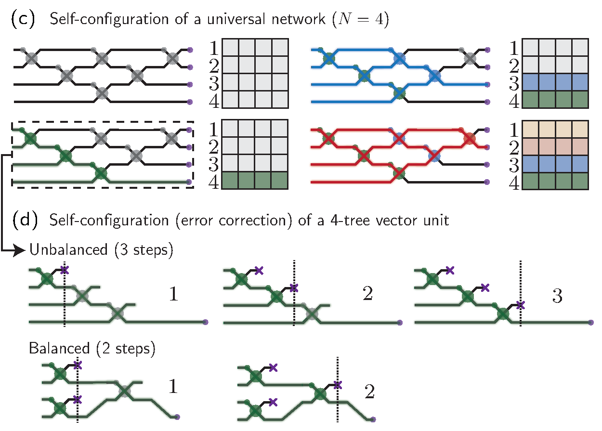
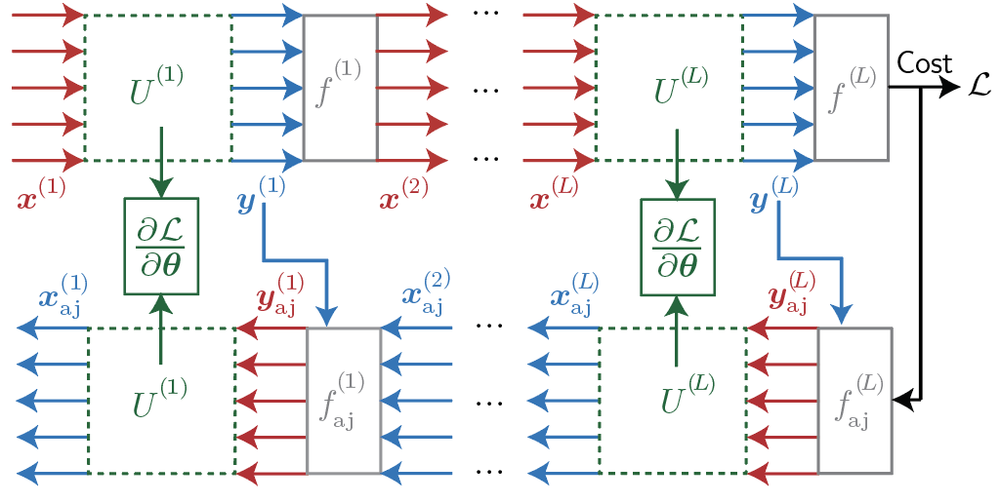
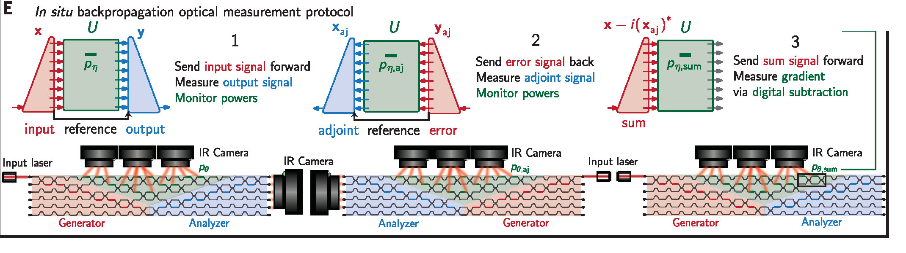
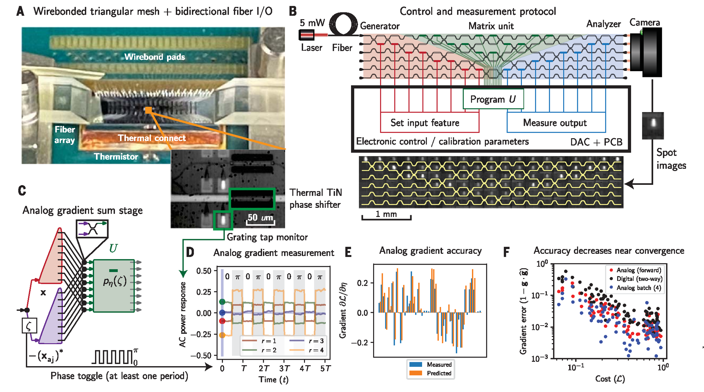
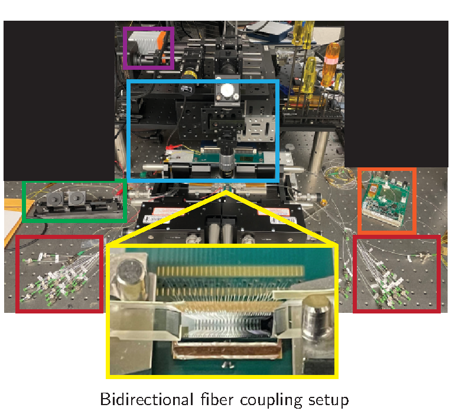
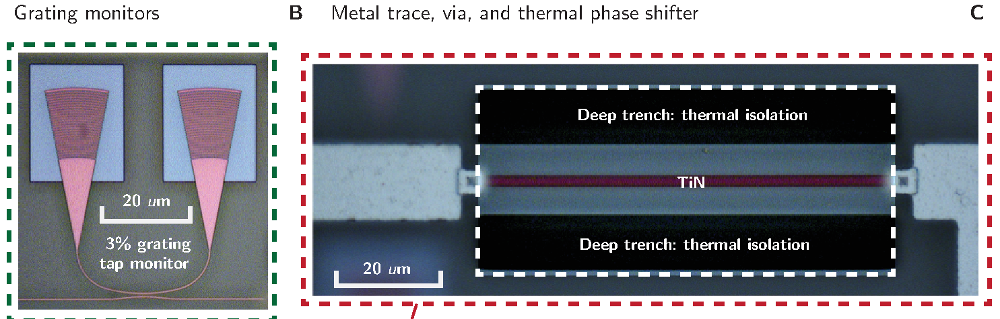
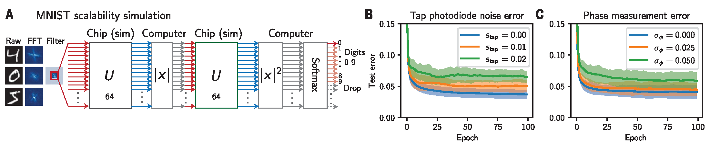
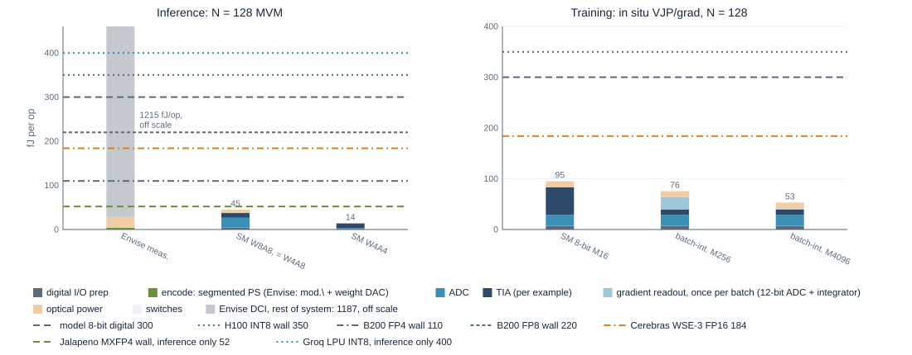
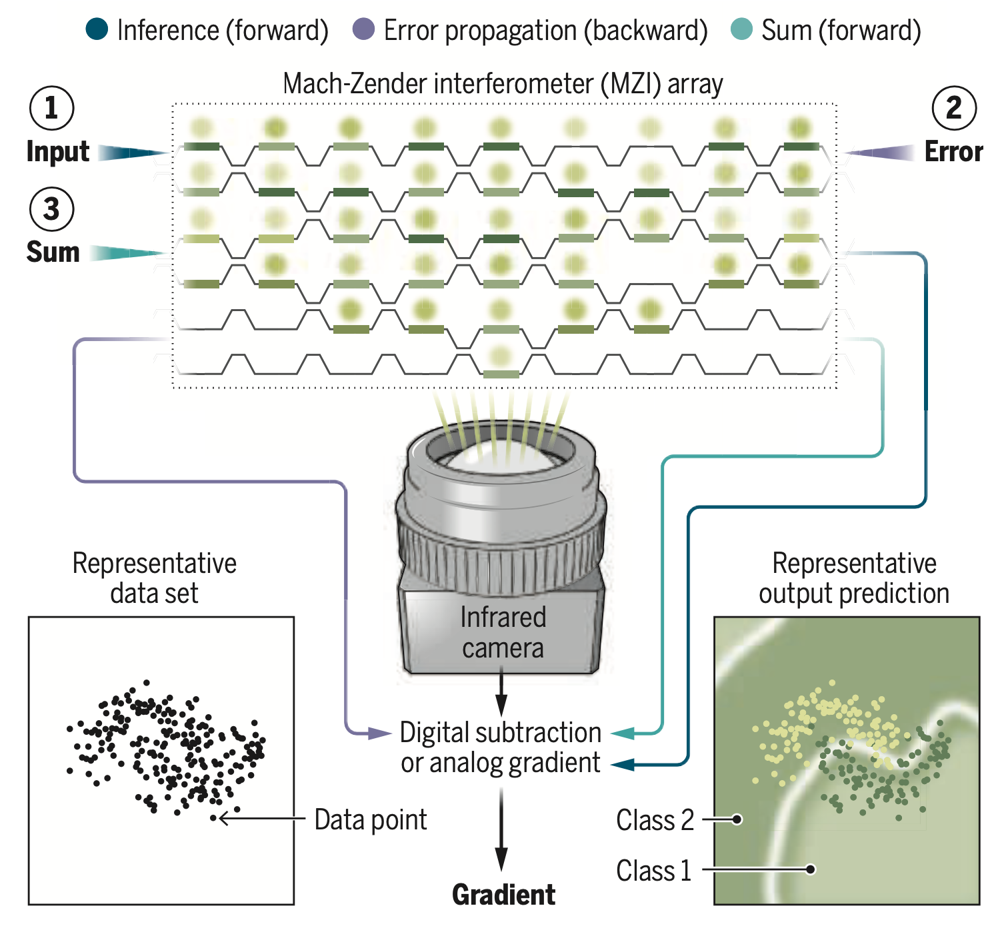
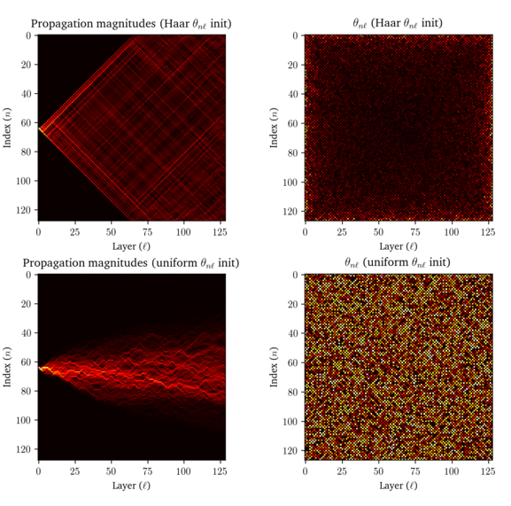

An MZI: \(\phi\), coupler, \(\theta\), coupler. Sweep \(\theta,\phi\) and all the light goes to one port. A mesh of them is any \(N\times N\) unitary.
Well over $1B of venture funding followed the AI thesis, 2017 to 2023.

Four conditions for optics to win: wide fan-in (still hard), low precision (now true), static weights (true for inference), data already analog (not in a datacenter).

| weights | \(N(N-1)\) phases, held |
| multiply, sum | interference |
| devices | \(N^2\) MZIs, coherent |
| who | Shen 2017; this work |
| weights | \(N^2\) attenuator cells, held |
| multiply, sum | attenuation, photocurrent |
| devices | \(N^2\) cells, incoherent |
| who | Envise, Nature 2025 |
| weights | pulses in time, from memory |
| multiply, sum | homodyne, integrate |
| devices | \(O(N)\), coherent |
| who | Hamerly 2019; Opticore |

The gradient of every phase shifter is measured on the chip itself, so fabrication errors are included automatically and no model of the device is needed. Fig. 1E, Pai et al., Science 380, 398 (2023).



The first demonstration of backpropagation on an optical chip. Watch the tap powers in the three passes, then the boundary forming in the last panel.
| scenario | ADC | clock | per op | per \(128\)-mesh | best digital |
|---|---|---|---|---|---|
| 2023 model, W8A8 | 8-bit SAR, \(1.38\,\mathrm{pJ}\) | \(1\,\mathrm{GS/s}\) | \(45\,\mathrm{fJ}\) | \(33\,\mathrm{TOPS}\) | B200 FP8, \(220\,\mathrm{fJ}\) |
| today, W8A8 | 5 nm TI-SAR (Broadcom 112G), \(1\) to \(3\,\mathrm{pJ}\) | \(10\,\mathrm{GS/s}\) | \(39\) to \(70\,\mathrm{fJ}\) | \(330\,\mathrm{TOPS}\) | B200 FP8, \(220\,\mathrm{fJ}\) |
| today, W4A4 | 5 nm flash, \(0.1\) to \(0.5\,\mathrm{pJ}\) | \(10\,\mathrm{GS/s}\) | \(14\) to \(20\,\mathrm{fJ}\) | \(330\,\mathrm{TOPS}\) | Jalapeño MXFP4, \(52\,\mathrm{fJ}\) |
| training, bf16-class, \(M=4096\) | 11-bit, \(7\,\mathrm{pJ}\); none at \(10\,\mathrm{GS/s}\) | \(1\,\mathrm{GS/s}\) | \(141\,\mathrm{fJ}\) | \(33\,\mathrm{TOPS}\) | Cerebras FP16, \(184\,\mathrm{fJ}\) |


| photonic mesh, projected from the 2023 model | best digital, 2026, vendor peak | |
|---|---|---|
| energy per op, inference | \(45\,\mathrm{fJ}\) at W4A8; \(14\) at W4A4 (shot-noise limit). Multiply engine only | B200 FP8 \(220\), FP4 \(110\); Jalapeño MXFP4 \(52\) |
| energy per op, training | \(141\,\mathrm{fJ}\), bf16-class activations as 8-bit mantissa plus block exponent, gradients integrated over the batch | Cerebras FP16 \(184\); H100 FP16 \(707\) |
| silicon | \(10^{-2}\,\mathrm{mm}^2\) per weight; \(0.05\) to \(0.2\,\mathrm{TOPS/mm}^2\) realised, \(\sim1\) at \(10\,\mathrm{GS/s}\) | \(10^{-4}\) to \(10^{-5}\,\mathrm{mm}^2\) per weight; B200 \(5.6\,\mathrm{TOPS/mm}^2\) |
| rack | \(22\,\mathrm{POPS}\) at \(1\,\mathrm{GS/s}\); parity needs \(10\,\mathrm{GS/s}\) and 16 tiles per package. \(50\) to \(100\,\mathrm{W}\) packages, air-cooled | NVL72 \(720\,\mathrm{POPS}\) at \(120\,\mathrm{kW}\), liquid |
| holding a weight | thermal \(800\,\mathrm{W}\) per mesh; EO short for a \(0\) to \(1\) cell, cm-class for a \(2\pi\) phase; rings drift; MEMS unproven | SRAM and HBM, solved |
| surrounding electronics (ADCs, memory, control) | unknown. Envise measured \(1.19\,\mathrm{pJ/op}\), \(25\times\) its optics; the model needs \(\lesssim50\,\mathrm{fJ/op}\) in 5 nm | included in the numbers above |
| reliability | hourly recalibration, \(10^6\) control loops (Envise); no MEMS PDK; sub-kelvin uniformity | solved |
| part | status | energy |
|---|---|---|
| input modulators | Si MZM \(50+\,\mathrm{GBaud}\), TFLN \(100+\); segmented EO encoder on \(b\) SerDes-class lines | \(10\,\mathrm{fJ}\) to \(1\,\mathrm{pJ}\) |
| 4-bit ADC | flash, \(10\) to \(50\,\mathrm{GS/s}\), routine | \(0.1\) to \(0.5\,\mathrm{pJ}\) |
| 8-bit nominal ADC | time-interleaved SAR in 112G PAM4 receivers: \(56\,\mathrm{GS/s}\), \(5.5\) to \(6.5\) ENOB, 5 nm (Broadcom, Marvell); coherent DSPs \(130\) to \(200\,\mathrm{GS/s}\) in 5 and 3 nm (Ciena WaveLogic 6, Marvell Orion) | \(1\) to \(3\,\mathrm{pJ}\) |
| 10 to 12-bit ADC | not at \(10\,\mathrm{GS/s}\): best \(9.4\) ENOB at \(5\,\mathrm{GS/s}\) (Ramkaj 2020, cited by Lightmatter); jitter-limited | \(32\,\mathrm{pJ}\) |
| photodiodes, TIAs | 25G-class parts; the 2023 model's \(7\,\mathrm{mW}\) TIA is already a \(10\,\mathrm{GS/s}\) part | \(0.7\,\mathrm{pJ}\) |
| the mesh | static weights, no clock; rectangular mesh has equal stage count on every path, skew is picoseconds vs a \(100\,\mathrm{ps}\) symbol | – |
| laser | \(1\,\mathrm{mW}\) per mode at \(10\,\mathrm{GS/s}\) is \(8\times10^5\) photons per symbol, above the \(\sim10^5\) for 8 bits | \(100\,\mathrm{fJ}\) |
| digital shell | \(10\,\mathrm{Tb/s}\) of activations in and out per tile: a coherent-DSP-class 5 nm design. Envise's clock tree stalled at \(500\,\mathrm{MHz}\) in 12 nm | \(2\) to \(3\,\mathrm{W}\) per tile |
| chip | node | transistors | peak, power |
|---|---|---|---|
| NVIDIA B200 | TSMC 4NP | \(208\,\mathrm{B}\) | \(9\,\mathrm{PFLOPS}\) dense FP4, \(1\,\mathrm{kW}\) |
| NVIDIA H100 | TSMC 4N | \(80\,\mathrm{B}\) | \(2\,\mathrm{POPS}\) INT8, \(700\,\mathrm{W}\) |
| OpenAI / Broadcom Jalapeño | 3 nm class, undisclosed | undisclosed | \(13.4\,\mathrm{PFLOPS}\) MXFP4, \(700\,\mathrm{W}\); \(216\,\mathrm{GiB}\) HBM4, \(15.4\,\mathrm{TB/s}\) |
| Cerebras WSE-3 | TSMC 5 nm | \(4\,\mathrm{T}\) | \(125\,\mathrm{PFLOPS}\) FP16, \(\approx23\,\mathrm{kW}\); \(44\,\mathrm{GB}\) SRAM |
| Groq LPU v1 | GF 14 nm | \(27\,\mathrm{B}\) | \(750\,\mathrm{TOPS}\) INT8, \(\approx300\,\mathrm{W}\); \(230\,\mathrm{MB}\) SRAM |
| Lightmatter Envise | GF 12 nm DCI + GF SiPh | \(50\,\mathrm{B}\) | \(65.5\,\mathrm{TOPS}\) ABFP16, \(78\,\mathrm{W}\) |
| 2023 chip | AMF SiPh, TiN heaters | – | \(6\times6\) mesh, camera readout |
| model | context | MLP GMACs | attention | MLP | proj. |
|---|---|---|---|---|---|
| Llama 3 70B, dense GQA | \(128\mathrm{k}\) | \(0.7\) | \(56\%\) | \(37\%\) | \(8\%\) |
| DeepSeek-V3.2, MoE, sparse DSA | \(128\mathrm{k}\) | \(0.4\) | \(58\%\) | \(28\%\) | \(13\%\) |
| Kimi K3, MoE, 69 KDA + 24 MLA | \(1\mathrm{M}\) | \(1.2\) | \(45\%\) | \(46\%\) | \(9\%\) |
| DeepSeek-V4 Pro, CSA + HCA hybrid | \(1\mathrm{M}\) | \(0.5\) | \(49\%\) | \(38\%\) | \(13\%\) |
MoE thins the active MLP, \((k+\text{shared})\times3\times d\times h_{\text{expert}}\), while attention is sized for the whole model, so attention's share is higher than in dense models: DeepSeek-V3.2's lightning indexer alone is linear in context. Linear (Kimi Delta Attention) and compressed (CSA, HCA) attention pull it back. Configs from the model cards; K3's MLA head dims and sparsity assumed as DeepSeek's; V4 Pro from its published \(27\%\) of V3.2's per-token FLOPs at \(1\mathrm{M}\). Script: scripts/attention_share.py.
| \(\mathrm{pJ/op}\), full system | ops per rack | vs NVL72 |
|---|---|---|
| \(1.2\) Envise measured | \(25\,\mathrm{POPS}\) | \(29\times\) less |
| \(0.40\) Groq LPU, INT8 | \(75\,\mathrm{POPS}\) | \(10\times\) less, 14 nm |
| \(0.30\) 8-bit digital model | \(100\,\mathrm{POPS}\) | \(7\times\) less |
| \(0.18\) Cerebras WSE-3, FP16 | \(160\,\mathrm{POPS}\) | \(4\times\) less, 16-bit |
| \(0.052\) Jalapeño, MXFP4 | \(580\,\mathrm{POPS}\) | near parity |
| \(0.045\) 2023 model, 8-bit | \(670\,\mathrm{POPS}\) | parity, \(\tfrac14\) power |
| \(0.014\) 2023 model, 4-bit | \(2.1\,\mathrm{EOPS}\) | \(3\times\) more |
| 168 packages per rack | ops per rack | kW, 8-bit | kW, 4-bit |
|---|---|---|---|
| 4 tiles, \(1\,\mathrm{GS/s}\) I/O (2023 model) | \(22\,\mathrm{POPS}\) | \(1\) | \(0.3\) |
| 4 tiles, \(10\,\mathrm{GS/s}\) I/O | \(220\,\mathrm{POPS}\) | \(10\) | \(3\) |
| 16 tiles, \(10\,\mathrm{GS/s}\) I/O | \(880\,\mathrm{POPS}\) | \(40\) | \(12\) |
| \(\mathrm{mm}^2\) per weight | TOPS per \(\mathrm{mm}^2\) | |
|---|---|---|
| 2023 chip MZI, \(625\,\mu\mathrm{m}\) long | \(0.08\) | – |
| compact MZI, EO or MEMS | \(0.01\) | – |
| Envise PTC, \(128^2\) in \(349\,\mathrm{mm}^2\) | \(0.021\) | \(0.05\) to \(0.19\) |
| Cerebras WSE-3, weights in SRAM | \(\sim10^{-5}\) | \(\sim2.7\) |
| B200 die, FP4 MAC + SRAM | \(\sim10^{-4}\) | \(\sim5.6\) |
| photonic mesh, 2023 model projected | best digital, 2026 | |
|---|---|---|
| energy per op, inference | \(45\,\mathrm{fJ}\) at W4A8, \(14\) at W4A4; multiply engine only | B200 FP8 \(220\,\mathrm{fJ}\), FP4 \(110\); Jalapeño MXFP4 \(52\) |
| energy per op, training | \(141\,\mathrm{fJ}\) at bf16-class activations (8-bit mantissa, block exponent, 11-bit ADC); \(53\) at A8 | Cerebras FP16 \(184\,\mathrm{fJ}\); H100 FP16 \(707\) |
| silicon per weight | \(10^{-2}\,\mathrm{mm}^2\), one interferometer per weight | \(10^{-4}\) GPU, \(10^{-5}\) Cerebras SRAM |
| throughput per \(\mathrm{mm}^2\) | \(0.05\) to \(0.2\,\mathrm{TOPS}\) realised; \(\sim1\) at \(10\,\mathrm{GS/s}\) | B200 \(5.6\,\mathrm{TOPS}\) |
| weights live in | \(86\mathrm{k}\) per reticle, the rest streamed from HBM | HBM4 \(216\,\mathrm{GiB}\); Cerebras \(44\,\mathrm{GB}\) on wafer |
| package, cooling | \(50\) to \(100\,\mathrm{W}\), air; lasers pooled, water-cooled | \(700\,\mathrm{W}\) to \(1\,\mathrm{kW}\), liquid |
| ops per rack | \(22\,\mathrm{POPS}\) at \(1\,\mathrm{GS/s}\); parity at \(10\,\mathrm{GS/s}\), 16 tiles per package | NVL72 \(720\,\mathrm{POPS}\), \(120\,\mathrm{kW}\) |
| precision | 4 to 8 bits; gradients gain \(\tfrac12\log_2 M\) bits by integration | FP4, FP8 inference; BF16 training |
| holding a weight | thermal \(800\,\mathrm{W}\) per mesh. EO holds a crossbar\'s \(0\) to \(1\) weight in a sub-mm cell; a mesh phase needs \(2\pi\): depletion cm-class, rings drift. MEMS unproven | SRAM and HBM, solved |
| training on chip | in situ: every gradient in three optical passes | digital backprop |
| where it fits | MLP and projections, prefill and training; attention streams; decode is memory-bound | everything, today |


A 2025 photonic system sits about \(10\times\) above GPU peak, with \(98\%\) of its power in electronics. The optics are not the term to optimize.